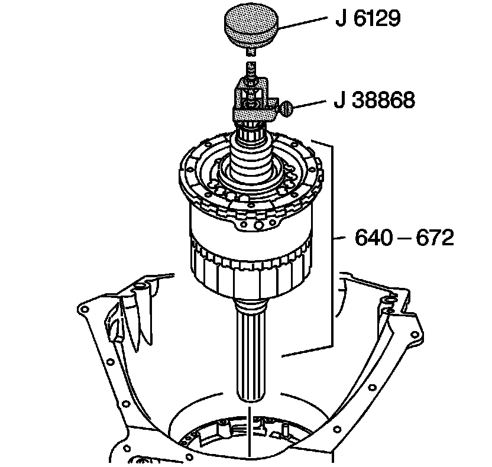

Center Support and Gear Unit Assembly Removal
Center Support and Gear Unit Assembly Removal
Tools Required
^ J 6116-A Rear Gear Holding Fixture
^ J 6129 Handle
^ J 21364-A Rear Gear Holding Fixture Adapter
^ J 38868 Output Shaft Assembly Remover and Installer
Notice: Discard the center support bolt (25) after you have removed the bolt. Damage could result to the center support housing if you reuse the bolt.
1. Remove the center support bolt (25).
2. Remove the rear oil cooler pipe fitting (90).
3. Inspect the rear oil cooler pipe fitting (90) for damaged threads.
4. Inspect the rear oil cooler pipe fitting seal (91) for nicks or cuts.
5. Remove the center support retainer ring (633).

6. Attach the J 38868 to the transmission main shaft.
7. Tighten the thumb screw on the J 38868.
8. Install the J 6129 to the J 38868.
9. Turn the J 6129 so that the handle shaft contacts the transmission main shaft.
10. Remove the center support and gear unit assembly (640-672) by lifting the J 38868 with the J 6129.
11. Remove the J 6129 and the J 38868.
12. Place the center support and gear unit assembly (640-672) into the J 21364-A (not visible in the illustration) and then into the J 6116-A.